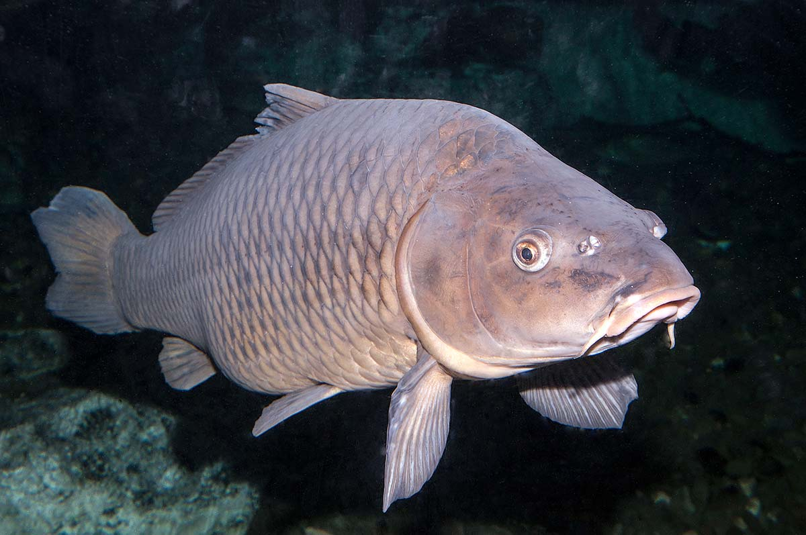

About Carp

Carp are one of the largest fish in the Salt River and provide a unique fishing challenge. Known for their strength and endurance, carp can put up a impressive fight when hooked.
Common carp are abundant in the Salt River, often found in the slower sections with abundant vegetation. They are bottom feeders and can grow to weights over 20 pounds.
Best Fishing Spots: Carp can be found in shallow, weedy areas and near river mouths. Look for them feeding in the mud during early morning and late afternoon.
Best Bait: Sweet corn, bread, and dough baits are highly effective for carp. They are also attracted to boilies and pellets used by carp anglers.
Carp Activity by Season in the Salt River
| Season | Carp Activity Level | Notes |
|---|---|---|
| Spring (Mar-May) | Moderate | Warming water increases feeding activity after winter dormancy |
| Summer (Jun-Aug) | High | Warm water and abundant food make carp very active feeders |
| Fall (Sep-Nov) | High | Cooler temperatures and preparation for winter keep carp feeding |
| Winter (Dec-Feb) | Low | Cold water slows activity, but carp remain hardy and can be caught on mild days |